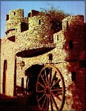

Santa Lucía
de Tirajana
Santa Lucía is situated in the interior of
Gran Canaria on 700 meters above sea level. City stands on actual base of
Vulcan crater. The valley is weary beautiful with ecological value. There
is historic place Roque de Ansite, where Canarian & Castilians made peace
five centuries ago. Visit La Forteleza museum with archaeologic remains. Also
visit old center and Parish Church. Down to road You can se Vecindario and
village of Temisa called the Bethlehem of south.

Restaurants:
-Hao
-Mirador
-Guatambra
Shopping:
If you looking for handmade things, you can found some of them here.
Try "mejunje" in rest. Hao